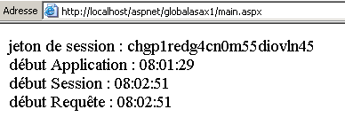
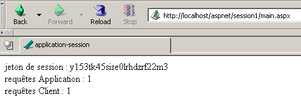
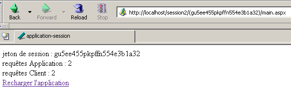
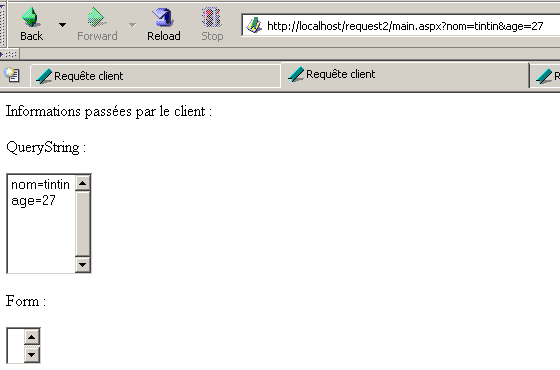

4. I fondamenti dello sviluppo ASP.NET
4.1. Il concetto di applicazione Web ASP.NET
4.1.1. Introduzione
Un'applicazione web è un'applicazione che riunisce vari documenti (HTML, codice .NET, immagini, suoni, ecc.). Questi documenti devono trovarsi in un'unica directory principale, nota come radice dell'applicazione web. A questa radice è associato un percorso virtuale sul server web. Abbiamo già incontrato il concetto di directory virtuale per il server Web Cassini. Questo concetto esiste anche per il server Web IIS. Una differenza importante tra i due server è che, in un dato momento, IIS può avere un numero qualsiasi di directory virtuali, mentre il server Web Cassini ne ha solo una: quella specificata all'avvio. Ciò significa che il server IIS può servire più applicazioni Web contemporaneamente, mentre il server Cassini ne serve solo una alla volta. Negli esempi precedenti, il server Cassini veniva sempre avviato con i parametri (<webroot>,/aspnet) che associavano la cartella virtuale /aspnet alla cartella fisica <webroot>. Il server web gestiva quindi sempre la stessa applicazione web. Ciò non ci ha impedito di scrivere e testare pagine diverse e indipendenti all'interno di questa singola applicazione web. Ogni applicazione web ha le proprie risorse, situate sotto la sua radice fisica <webroot>:
- una cartella [bin] in cui è possibile collocare le classi precompilate
- un file [global.asax] che consente di inizializzare l'applicazione web nel suo complesso, nonché l'ambiente di runtime per ciascuno dei suoi utenti
- un file [web.config] che consente di configurare il comportamento dell'applicazione
- un file [default.aspx] che funge da punto di ingresso dell'applicazione
- ...
Non appena un'applicazione utilizza una di queste tre risorse, richiede i propri percorsi fisici e virtuali. Non c'è, infatti, alcun motivo per cui due diverse applicazioni web debbano essere configurate allo stesso modo. I nostri esempi precedenti potevano essere tutti collocati all'interno della stessa applicazione (<webroot>,/aspnet) poiché non utilizzavano nessuna delle risorse sopra menzionate.
Rivediamo l'architettura MVC raccomandata all'inizio di questo capitolo per lo sviluppo di applicazioni web:

L'applicazione web è costituita da file di classe (controller, classi di business, classi di accesso ai dati) e file di presentazione (documenti HTML, immagini, suoni, fogli di stile, ecc.). Tutti questi file saranno collocati in un'unica directory radice, che a volte chiameremo <application-path>. Questa directory radice sarà associata a un percorso virtuale <application-vpath>. La mappatura tra questo percorso virtuale e il percorso fisico viene configurata tramite il server web. Abbiamo visto che per il server Cassini questa mappatura avviene all'avvio del server. Ad esempio, in una finestra del prompt dei comandi, lanceremmo Cassini con:
Nella cartella <application-path>, a seconda delle nostre esigenze, troveremo:
- la cartella [bin] per il posizionamento delle classi precompilate (DLL)
- il file [global.asax] quando è necessario eseguire l'inizializzazione all'avvio dell'applicazione o durante una sessione utente
- il file [web.config] quando è necessario configurare l'applicazione
- il file [default.aspx] quando abbiamo bisogno di una pagina predefinita nell'applicazione
Per aderire a questo concetto di applicazione web, gli esempi che seguiranno saranno tutti collocati in una cartella <application-path> specifica dell'applicazione, che sarà associata a una cartella virtuale <application-vpath>, poiché il server Cassini viene avviato per collegare questi due parametri.
4.1.2. Configurazione di un'applicazione web
Se <application-path> è la radice di un'applicazione ASP.NET, è possibile utilizzare il file <application-path>\web.config per configurarla. Questo file è in formato XML. Ecco un esempio:
<?xml version="1.0" encoding="UTF-8" ?>
<configuration>
<appSettings>
<add key="nom" value="tintin"/>
<add key="age" value="27"/>
</appSettings>
</configuration>
Si prega di notare che i tag XML distinguono tra maiuscole e minuscole. Tutte le informazioni di configurazione devono essere racchiuse tra i tag <configuration> e </configuration>. Sono disponibili molte sezioni di configurazione. Qui ne tratteremo solo una: la sezione <appSettings>, che consente di inizializzare i dati utilizzando il tag <add>. La sintassi di questo tag è la seguente:
Quando il server web avvia un'applicazione, verifica se esiste un file denominato web.config in <application-path>. In caso affermativo, lo legge e memorizza le informazioni in un oggetto [ConfigurationSettings], che sarà disponibile per tutte le pagine dell'applicazione finché questa rimane attiva. La classe [ConfigurationSettings] dispone di un metodo statico [AppSettings]:

Per recuperare il valore di una chiave C dal file di configurazione, scrivere ConfigurationSettings.AppSettings("C"). Questo restituisce una stringa. Per utilizzare il file di configurazione precedente, creiamo una pagina denominata [default.aspx]. Il codice VB nel file [default.aspx.vb] sarà il seguente:
Imports System.Configuration
Public Class _default
Inherits System.Web.UI.Page
Protected nom As String
Protected age As String
Private Sub Page_Load(ByVal sender As System.Object, ByVal e As System.EventArgs) Handles MyBase.Load
'retrieve configuration information
nom = ConfigurationSettings.AppSettings("nom")
age = ConfigurationSettings.AppSettings("age")
End Sub
End Class
Possiamo vedere che quando la pagina viene caricata, vengono recuperati i valori dei parametri di configurazione [name] e [age]. Verranno visualizzati dal codice di presentazione in [default.aspx]:
<%@ Page src="default.aspx.vb" Language="vb" AutoEventWireup="false" Inherits="_default" %>
<html>
<head>
<title>Configuration</title>
</head>
<body>
Nom :
<% =nom %><br/>
Age :
<% =age %><br/>
</body>
</html>
Per il test, colloca i file [web.config], [default.aspx] e [default.aspx.vb] nella stessa cartella:
D:\data\devel\aspnet\poly\chap2\config1>dir
30/03/2004 15:06 418 default.aspx.vb
30/03/2004 14:57 236 default.aspx
30/03/2004 14:53 186 web.config
Supponiamo che <application-path> sia la cartella contenente i tre file dell'applicazione. Il server Cassini viene avviato con i parametri (<application-path>,/aspnet/config1). Richiediamo l'URL [http://localhost/aspnet/config1]. Poiché [config1] è una cartella, il server web cercherà al suo interno un file denominato [default.aspx] e lo visualizzerà se lo trova. In questo caso, lo troverà:

4.1.3. Applicazione, Sessione, Contesto
4.1.3.1. Il file global.asax
Il codice nel file [global.asax] viene sempre eseguito prima che venga caricata la pagina richiesta dalla richiesta corrente. Deve trovarsi nella radice <application-path> dell'applicazione. Se esiste, il file [global.asax] viene utilizzato in diversi momenti dal server web:
- all'avvio o alla chiusura dell'applicazione web
- quando una sessione utente inizia o termina
- quando ha inizio una richiesta utente
Come per le pagine .aspx, il file [global.asax] può essere scritto in diversi modi, in particolare separando il codice VB in una classe di controllo e in codice di presentazione. Questa è la scelta predefinita di Visual Studio e faremo lo stesso qui. Normalmente non c'è alcuna presentazione da gestire, poiché questo ruolo è assegnato alle pagine .aspx. Il contenuto del file [global.asax] si riduce quindi a una direttiva che fa riferimento al file contenente il codice di controllo:
<%@ Application src="Global.asax.vb" Inherits="Global" %>
Si noti che la direttiva non è più [Page] ma [Application]. Il codice del controller associato [global.asax.vb], generato da Visual Studio, è il seguente:
Imports System
Imports System.Web
Imports System.Web.SessionState
Public Class Global
Inherits System.Web.HttpApplication
Sub Application_Start(ByVal sender As Object, ByVal e As EventArgs)
' Triggered when application is started
End Sub
Sub Session_Start(ByVal sender As Object, ByVal e As EventArgs)
' Triggered when the session is started
End Sub
Sub Application_BeginRequest(ByVal sender As Object, ByVal e As EventArgs)
' Triggered at the start of each request
End Sub
Sub Application_AuthenticateRequest(ByVal sender As Object, ByVal e As EventArgs)
' Triggered when user authentication is attempted
End Sub
Sub Application_Error(ByVal sender As Object, ByVal e As EventArgs)
' Triggers when an error occurs
End Sub
Sub Session_End(ByVal sender As Object, ByVal e As EventArgs)
' Triggered when session ends
End Sub
Sub Application_End(ByVal sender As Object, ByVal e As EventArgs)
' Triggered when application ends
End Sub
End Class
Si noti che la classe del controller deriva dalla classe [HttpApplication]. Nel corso del ciclo di vita di un'applicazione, si verificano diversi eventi importanti. Questi vengono gestiti da procedure il cui scheletro è mostrato sopra.
- [Application_Start]: Ricordiamo che un'applicazione web è "contenuta" all'interno di un percorso virtuale. L'applicazione si avvia non appena una pagina situata in questo percorso virtuale viene richiesta da un client. Viene quindi eseguita la procedura [Application_Start]. Questo sarà l'unico momento in cui ciò avverrà. In questa procedura, eseguiremo qualsiasi inizializzazione necessaria per l'applicazione, come la creazione di oggetti la cui durata corrisponde a quella dell'applicazione.
- [Application-End]: viene eseguita quando l'applicazione termina. Ogni applicazione ha un timeout di inattività associato, configurabile in [web.config], dopo il quale l'applicazione viene considerata terminata. È quindi il server web a prendere questa decisione in base alle impostazioni dell'applicazione. Il timeout di inattività di un'applicazione è definito come il periodo durante il quale nessun client ha effettuato una richiesta per una risorsa dell'applicazione.
- [Session-Start]/[Session_End]: una sessione è associata a ogni client a meno che l'applicazione non sia configurata per non avere sessioni. Un client non è un utente seduto davanti a uno schermo. Se un utente ha aperto due browser per interagire con l'applicazione, questi rappresentano due client. Un client è identificato da un token di sessione che deve includere in ciascuna delle sue richieste. Questo token di sessione è una stringa univoca di caratteri generata casualmente dal server web. Non possono esserci due client con lo stesso token di sessione. Questo token segue il client come segue:
- Il client che effettua la sua prima richiesta non invia un token di sessione. Il server web lo riconosce e ne assegna uno. Questo segna l'inizio della sessione e viene eseguita la procedura [Session_Start]. Ciò avviene una sola volta.
- Il client effettua le richieste successive inviando il token che lo identifica. Ciò consente al server web di recuperare le informazioni associate a questo token. Ciò consente il tracciamento tra le varie richieste del client.
- L'applicazione può fornire al client un modulo di fine sessione. In questo caso, è il client stesso ad avviare la chiusura della sessione. Verrà eseguita la procedura [Session_End]. Ciò accadrà una sola volta.
- Il client potrebbe non richiedere mai di terminare la sessione autonomamente. In questo caso, dopo un certo periodo di inattività della sessione — che può essere configurato anche tramite [web.config] — la sessione verrà terminata dal server web. Verrà quindi eseguita la procedura [Session_End].
- [Application_BeginRequest]: questa procedura viene eseguita non appena arriva una nuova richiesta. Viene quindi eseguita per ogni richiesta proveniente da qualsiasi client. Questo è un buon punto per esaminare la richiesta prima di inoltrarla alla pagina richiesta. È anche possibile decidere di reindirizzarla a un'altra pagina.
- [Application_Error]: viene eseguita ogni volta che si verifica un errore che non è gestito esplicitamente dal codice nel controller [global.asax.vb]. Qui è possibile reindirizzare la richiesta del client a una pagina che spiega la causa dell'errore.
Se nessuno di questi eventi deve essere gestito, il file [global.asax] può essere ignorato. Questo è ciò che è stato fatto nei primi esempi di questo capitolo.
4.1.3.2. Esempio 1
Sviluppiamo un'applicazione per comprendere meglio i tre momenti chiave: avvio dell'applicazione, avvio della sessione e richiesta del client. Il file [global.asax] avrà questo aspetto:
Il file [global.asax.vb] associato sarà il seguente:
Imports System
Imports System.Web
Imports System.Web.SessionState
Public Class global
Inherits System.Web.HttpApplication
Sub Application_Start(ByVal sender As Object, ByVal e As EventArgs)
' Triggered when application is started
' we note the time
Dim startApplication As String = Date.Now.ToString("T")
' we place it in the context of the application
Application.Item("startApplication") = startApplication
End Sub
Sub Session_Start(ByVal sender As Object, ByVal e As EventArgs)
' Triggered when the session is started
' we note the time
Dim startSession As String = Date.Now.ToString("T")
' put it in the session
Session.Item("startSession") = startSession
End Sub
Sub Application_BeginRequest(ByVal sender As Object, ByVal e As EventArgs)
' we note the time
Dim startRequest As String = Date.Now.ToString("T")
' put it in the session
Context.Items("startRequest") = startRequest
End Sub
End Class
I punti chiave del codice sono i seguenti:
- Il server web rende disponibili una serie di oggetti alla classe [HttpApplication] in [global.asax.vb]:
- Application di tipo [HttpApplicationState] — rappresenta l'applicazione Web — fornisce l'accesso a un dizionario di oggetti [Application.Item] accessibile a tutti i client dell'applicazione — consente la condivisione di informazioni tra diversi client — l'accesso simultaneo in lettura/scrittura da parte di più client agli stessi dati richiede la sincronizzazione dei client.
- Sessione di tipo [HttpSessionState] — rappresenta un cliente specifico — fornisce l'accesso a un dizionario di oggetti [Session.Item] accessibili a tutte le richieste provenienti da quel cliente — consente di memorizzare informazioni su un cliente, che possono poi essere recuperate durante le richieste del cliente.
- Richiesta di tipo [HttpRequest] - rappresenta la richiesta HTTP corrente del client
- Risposta di tipo [HttpResponse] — rappresenta la risposta HTTP attualmente in fase di costruzione da parte del server per il client
- Server di tipo [HttpServerUtility] — fornisce metodi di utilità, in particolare per reindirizzare la richiesta a una pagina diversa da quella originariamente prevista.
- Contesto di tipo [HttpContext] — questo oggetto viene ricreato ad ogni nuova richiesta ma è condiviso da tutte le pagine coinvolte nell’elaborazione della richiesta — consente di passare informazioni da una pagina all’altra durante l’elaborazione della richiesta tramite il suo dizionario Items.
- La procedura [Application_Start] registra l'avvio dell'applicazione in una variabile memorizzata in un dizionario accessibile a livello di applicazione
- La procedura [Session_Start] registra l'inizio della sessione in una variabile memorizzata in un dizionario accessibile a livello di sessione
- La procedura [Application_BeginRequest] registra l'inizio della richiesta in una variabile memorizzata in un dizionario accessibile a livello di richiesta (ovvero, disponibile durante tutta la sua elaborazione ma persa al termine della stessa)
La pagina di destinazione sarà la seguente pagina [main.aspx]:
<%@ Page src="main.aspx.vb" Language="vb" AutoEventWireup="false" Inherits="main" %>
<html>
<head>
<title>global.asax</title>
</head>
<body>
jeton de session :
<% =jeton %><br/>
début Application :
<% =startApplication %><br/>
début Session :
<% =startSession %><br/>
début Requête :
<% =startRequest %><br/>
</body>
</html>
Questa pagina di presentazione visualizza i valori calcolati dal suo controller [main.aspx.vb]:
Public Class main
Inherits System.Web.UI.Page
Protected startApplication As String
Protected startSession As String
Protected startRequest As String
Protected jeton as String
Private Sub Page_Load(ByVal sender As System.Object, ByVal e As System.EventArgs) Handles MyBase.Load
' retrieve application and session info
jeton=Session.SessionId
startApplication = Application.Item("startApplication").ToString
startSession = Session.Item("startSession").ToString
startRequest = Context.Items("startRequest").ToString
End Sub
End Class
Il controller recupera semplicemente le tre informazioni memorizzate nell'applicazione, nella sessione e nel contesto da [global.asax.vb].
Testiamo l'applicazione come segue:
- i file vengono raccolti in un'unica cartella <application-path>

- il server Cassini viene avviato con i parametri (<percorso-applicazione>,/aspnet/globalasax1)
- un primo client richiede l'URL [http://localhost/aspnet/globalasax1/main.aspx] e riceve il seguente risultato:

- Lo stesso client effettua una nuova richiesta (utilizzando l'opzione Ricarica del browser):

Possiamo notare che è cambiato solo il tempo di richiesta. Ciò indica due cose:
- Le procedure [Application_Start] e [Session_Start] in [global.asax] non sono state eseguite durante la seconda richiesta.
- Gli oggetti [Application] e [Session], in cui erano memorizzati i tempi di avvio dell'applicazione e della sessione, sono ancora disponibili per la seconda richiesta.
- Avviamo un secondo browser per creare un secondo client e richiediamo nuovamente lo stesso URL:

Questa volta, vediamo che l'ora della sessione è cambiata. Il secondo browser, sebbene si trovi sulla stessa macchina, è stato trattato come un secondo client e per esso è stata creata una nuova sessione. Possiamo vedere che i due client non hanno lo stesso token di sessione. L'ora di inizio dell'applicazione non è cambiata, il che significa che:
- la procedura [Application_Start] in [global.asax.vb] non è stata eseguita
- l'oggetto [Application], in cui era memorizzata l'ora di avvio dell'applicazione, è accessibile al secondo client. Pertanto, questo è l'oggetto in cui devono essere memorizzate le informazioni che devono essere condivise tra i vari client dell'applicazione, mentre l'oggetto [Session] viene utilizzato per memorizzare le informazioni che devono essere condivise tra le richieste provenienti dallo stesso client.
4.1.3.3. Una panoramica
Con quanto appreso finora, possiamo creare un diagramma preliminare che spiega come funzionano un server web e le applicazioni web che esso serve:

Il diagramma sopra mostra un server che serve due applicazioni etichettate A e B, ciascuna con due client. Un server web è in grado di servire più applicazioni web contemporaneamente. Queste applicazioni sono completamente indipendenti l'una dall'altra. Ci concentreremo sull'applicazione A. L'elaborazione di una richiesta dal client-1A all'applicazione A procederà come segue:
- Il client 1A richiede al server web una risorsa appartenente al dominio dell'applicazione A. Ciò significa che richiede un URL del tipo [http://machine:port/VA/ressource], dove VA è il percorso virtuale dell'applicazione A.
- Se il server web rileva che si tratta della prima richiesta di una risorsa proveniente dall'Applicazione A, attiva l'evento [Application_Start] nel file [global.asax] dell'Applicazione A. Verrà creato un oggetto [ApplicationA] di tipo [HttpApplicationState]. Le varie parti dell'applicazione memorizzeranno in questo oggetto i dati con ambito [Application], ovvero i dati relativi a tutti gli utenti. L'oggetto [ApplicationA] rimarrà in essere fino a quando il server web non scaricherà l'applicazione A.
- Se il server web rileva anche che si tratta di un nuovo client per l'Applicazione A, attiverà l'evento [Session_Start] nel file [global.asax] dell'Applicazione A. Verrà creato un oggetto [Session-1A] di tipo [HttpSessionState]. Questo oggetto consentirà all'Applicazione A di memorizzare oggetti con ambito [Session], ovvero oggetti appartenenti a un client specifico. L'oggetto [Session-1A] esisterà finché il client 1A effettuerà richieste. Consentirà il tracciamento di questo client. Il server web rileva di avere a che fare con un nuovo client in due casi:
- il client non ha inviato un token di sessione nelle intestazioni HTTP della sua richiesta
- il client ha inviato un token di sessione che non esiste (malfunzionamento del client o tentativo di hacking) o che non esiste più. Un token di sessione scade dopo un certo periodo di inattività del client (20 minuti per impostazione predefinita con IIS). Questo periodo di timeout è configurabile.
- In tutti i casi, il server web attiverà l'evento [Application_BeginRequest] nel file [global.asax]. Questo evento avvia l'elaborazione di una richiesta del client. È comune non gestire questo evento e passare il controllo alla pagina richiesta dal client, che provvederà poi a elaborare la richiesta. Possiamo anche utilizzare questo evento per analizzare la richiesta, elaborarla e decidere quale pagina inviare in risposta. Useremo questa tecnica per implementare un'applicazione che segua l'architettura MVC di cui abbiamo parlato.
- Una volta superato il filtro in [global.asax], la richiesta del client viene passata a una pagina .aspx che elaborerà la richiesta. Vedremo in seguito che è possibile far passare la richiesta attraverso un filtro costituito da più pagine. L'ultima pagina sarà responsabile dell'invio della risposta al client. Le pagine possono aggiungere informazioni che hanno calcolato alla richiesta iniziale del client. Possono memorizzare queste informazioni nella raccolta Context.Items. Infatti, tutte le pagine coinvolte nell'elaborazione della richiesta di un client hanno accesso a questo pool di dati.
- Il codice delle varie pagine ha accesso ai serbatoi di dati rappresentati dagli oggetti [ApplicationA], [Session-1A], ... È importante ricordare che il server web elabora simultaneamente più client per l'applicazione A. Tutti questi client hanno accesso all'oggetto [Application A]. Se devono modificare i dati in questo oggetto, è necessaria la sincronizzazione dei client. Ogni client XA ha anche accesso al pool di dati [Session-XA]. Poiché questo è riservato a loro, qui non è richiesta alcuna sincronizzazione.
- Il server web gestisce più applicazioni web contemporaneamente. Non vi è alcuna interferenza tra i client di queste diverse applicazioni.
Da queste spiegazioni, possiamo riassumere i seguenti punti:
- In un dato momento, un server web serve più client contemporaneamente. Ciò significa che non attende il completamento di una richiesta prima di elaborarne un'altra. Al momento T, vengono quindi elaborate diverse richieste appartenenti a client diversi per applicazioni diverse. Il codice di elaborazione in esecuzione simultanea all'interno del server web viene talvolta definito thread di esecuzione.
- I thread di esecuzione dei client di diverse applicazioni web non interferiscono tra loro. C'è isolamento.
- I thread di esecuzione dei client della stessa applicazione potrebbero dover condividere dati:
- I thread di esecuzione per le richieste provenienti da due client diversi (con token di sessione diversi) possono condividere i dati tramite l'oggetto [Application].
- I thread di esecuzione per richieste successive provenienti dallo stesso client possono condividere dati tramite l'oggetto [Session].
- I thread di esecuzione per pagine successive che elaborano la stessa richiesta da un determinato client possono condividere dati tramite l'oggetto [Context].
4.1.3.4. Esempio 2
Sviluppiamo un nuovo esempio che illustri quanto appena trattato. Inseriremo i seguenti file nella stessa cartella:
[global.asax]
[global.asax.vb]
Imports System
Imports System.Web
Imports System.Web.SessionState
Public Class global
Inherits System.Web.HttpApplication
Sub Application_Start(ByVal sender As Object, ByVal e As EventArgs)
' Triggered when application is started
' init customer counter
Application.Item("nbRequêtes") = 0
End Sub
Sub Session_Start(ByVal sender As Object, ByVal e As EventArgs)
' Triggered when the session is started
' init query counter
Session.Item("nbRequêtes") = 0
End Sub
End Class
Lo scopo dell'applicazione è contare il numero totale di richieste effettuate all'applicazione e il numero di richieste per cliente. All'avvio dell'applicazione [Application_Start], il contatore delle richieste effettuate all'applicazione viene impostato a 0. Questo contatore è collocato nell'ambito [Application] perché deve essere incrementato da tutti i clienti. Quando un client si connette per la prima volta [Session_Start], impostiamo a 0 il contatore delle richieste effettuate da quel client. Questo contatore è collocato nell'ambito [Session] perché si applica solo a un client specifico.
Una volta eseguito [global.asax], verrà eseguito il seguente file [main.aspx]:
<%@ Page src="main.aspx.vb" Language="vb" AutoEventWireup="false" Inherits="main" %>
<html>
<head>
<title>application-session</title>
</head>
<body>
jeton de session :
<% =jeton %>
<br />
requêtes Application :
<% =nbRequêtesApplication %>
<br />
requêtes Client :
<% =nbRequêtesClient %>
<br />
</body>
</html>
Visualizza tre informazioni calcolate dal suo controller:
- l'identità del client tramite il suo token di sessione: [token]
- il numero totale di richieste effettuate all'applicazione: [nbRequêtesApplication]
- il numero totale di richieste effettuate dal client identificato come 1: [nbClientRequests]
Le tre informazioni vengono calcolate in [main.aspx.vb]:
Public Class main
Inherits System.Web.UI.Page
Protected nbRequêtesApplication As String
Protected nbRequêtesClient As String
Protected jeton As String
Private Sub Page_Load(ByVal sender As Object, ByVal e As System.EventArgs) Handles MyBase.Load
' one more request for the
Application.Item("nbRequêtes") = CType(Application.Item("nbRequêtes"), Integer) + 1
' one more request in the session
Session.Item("nbRequêtes") = CType(Session.Item("nbRequêtes"), Integer) + 1
' init presentation variables
nbRequêtesApplication = Application.Item("nbRequêtes").ToString
jeton = Session.SessionID
nbRequêtesClient = Session.Item("nbRequêtes").ToString
End Sub
End Class
Quando viene eseguito [main.aspx.vb], stiamo elaborando una richiesta proveniente da un determinato client. Utilizziamo l'oggetto [Application] per incrementare il numero di richieste per l'applicazione e l'oggetto [Session] per incrementare il numero di richieste per il client di cui stiamo attualmente elaborando la richiesta. Ricordiamo che, mentre tutti i client della stessa applicazione condividono lo stesso oggetto [Application], ciascuno di essi ha un proprio oggetto [Session].
Testiamo l'applicazione inserendo i quattro file precedenti in una cartella denominata <application-path> e avviamo il server Cassini con i parametri (<application-path>,/aspnet/webapplia). Apriamo un browser e accediamo all'URL [http://localhost/aspnet/webapplia/main.aspx]:

Effettuiamo una seconda richiesta utilizzando il pulsante [Ricarica]:

Apriamo un secondo browser per richiedere lo stesso URL. Per il server web, si tratta di un nuovo client:

Possiamo vedere che il token di sessione è cambiato, indicando un nuovo client. Ciò si riflette nel numero di richieste del client. Ora torniamo al primo browser e richiediamo nuovamente lo stesso URL:

Il numero di richieste effettuate all'applicazione viene conteggiato correttamente.
4.1.3.5. La necessità di sincronizzare i client di un'applicazione
Nell'applicazione precedente, il contatore delle richieste effettuate all'applicazione viene incrementato nella procedura [Form_Load] della pagina [main.aspx] come segue:
' une requête de plus pour l'application
Application.Item("nbRequêtes") = CType(Application.Item("nbRequêtes"), Integer) + 1
Questa istruzione, sebbene semplice, richiede diverse istruzioni del processore per essere eseguita. Supponiamo che ne richieda tre:
- lettura del contatore
- incremento del contatore
- scrittura del contatore
Il server web gira su una macchina multitasking, il che significa che a ogni attività viene concesso il processore per pochi millisecondi prima di perderlo e poi riottenerlo dopo che anche tutte le altre attività hanno avuto la loro parte di tempo. Supponiamo che due client, A e B, facciano una richiesta al server web contemporaneamente. Supponiamo che il client A sia il primo, entri nella procedura [Form_Load] in [main.aspx.vb], legga il contatore (=100) e venga poi interrotto perché la sua porzione di tempo è scaduta. Ora supponiamo che sia il turno del client B e che il client B subisca la stessa sorte: raggiunge il metodo , legge il valore del contatore (=100), ma non ha il tempo di incrementarlo. I client A e B hanno entrambi un valore del contatore pari a 100. Supponiamo che sia di nuovo il turno del client A: incrementano il proprio contatore, lo impostano su 101 e poi terminano. Ora è il turno del client B, che ha in suo possesso il vecchio valore del contatore, non quello nuovo. Pertanto, anche lui imposta il valore del contatore su 101 e termina. Il valore del contatore delle richieste dell'applicazione ora è errato.
Per illustrare questo problema, riprendiamo l'applicazione precedente e la modifichiamo come segue:
- I file [global.asax], [global.asax.vb] e [main.aspx] rimangono invariati
- il file [main.aspx.vb] diventa il seguente:
Imports System.Threading
Public Class main
Inherits System.Web.UI.Page
Protected nbRequêtesApplication As Integer
Protected nbRequêtesClient As Integer
Protected jeton As String
Private Sub Page_Load(ByVal sender As Object, ByVal e As System.EventArgs) Handles MyBase.Load
' one more request for the application and session
' meter reading
nbRequêtesApplication = CType(Application.Item("nbRequêtes"), Integer)
nbRequêtesClient = CType(Session.Item("nbRequêtes"), Integer)
' wait 5 s
Thread.Sleep(5000)
' meter incrementation
nbRequêtesApplication += 1
nbRequêtesClient += 1
' meter registration
Application.Item("nbRequêtes") = nbRequêtesApplication
Session.Item("nbRequêtes") = nbRequêtesClient
' init presentation variables
jeton = Session.SessionID
End Sub
End Class
L'incremento del contatore è stato suddiviso in quattro fasi:
- lettura del contatore
- sospensione del thread di esecuzione
- incremento del contatore
- riscrivere il contatore
Consideriamo nuovamente i nostri due client, A e B. Tra la fase di lettura e quella di incremento dei contatori delle richieste, costringiamo il thread di esecuzione a fermarsi per 5 secondi. La conseguenza immediata di ciò è che perderà il processore, che verrà quindi assegnato a un'altra attività. Supponiamo che il client A sia il primo. Leggerà il valore del contatore N e verrà interrotto per 5 secondi. Se, durante quel tempo, il client B ha accesso alla CPU, dovrebbe leggere lo stesso valore del contatore N. Alla fine, entrambi i client dovrebbero visualizzare lo stesso valore del contatore, il che sarebbe anomalo.
Testiamo l'applicazione inserendo i quattro file precedenti in una cartella che chiamiamo <application-path> e avviamo il server Cassini con i parametri (<application-path>,/aspnet/webapplib). Configuriamo due browser diversi con l'URL [http://localhost/aspnet/webapplib/main.aspx]. Avviamo il primo per richiedere l'URL, poi, senza attendere la risposta che arriverà 5 secondi dopo, avviamo il secondo browser. Dopo poco più di 5 secondi, otteniamo il seguente risultato:

Vediamo:
- che abbiamo due client diversi (non lo stesso token di sessione)
- che ogni client ha effettuato una richiesta
- che il contatore delle richieste effettuate all'applicazione dovrebbe quindi essere a 2 in uno dei due browser. Non è così.
Ora, proviamo un altro esperimento. Utilizzando lo stesso browser, inviamo cinque richieste all'URL [http://localhost/aspnet/webapplib/main.aspx]. Anche in questo caso, le inviamo una dopo l'altra senza attendere i risultati. Una volta che tutte le richieste sono state eseguite, otteniamo il seguente risultato per l'ultima:

Possiamo osservare:
- che le 5 richieste sono state considerate provenienti dallo stesso client perché il contatore delle richieste del client è a 5. Anche se non mostrato sopra, possiamo vedere che il token di sessione è effettivamente lo stesso per tutte e 5 le richieste.
- che il contatore delle richieste effettuate all'applicazione è corretto.
Cosa possiamo concludere? Nulla di definitivo. Forse il server web non inizia a eseguire una richiesta da un client se quel client ne ha già una in corso? Non ci sarebbe quindi mai un'esecuzione simultanea di richieste dallo stesso client. Verrebbero eseguite una dopo l'altra. Questo punto deve essere verificato. Potrebbe infatti dipendere dal tipo di client utilizzato.
4.1.3.6. Sincronizzazione dei client
Il problema evidenziato nell'applicazione precedente è un classico (ma non facile da risolvere) problema di accesso esclusivo a una risorsa. Nel nostro caso specifico, dobbiamo assicurarci che due client, A e B, non possano trovarsi entrambi nella sequenza di codice contemporaneamente:
- leggere il contatore
- incrementare il contatore
- scrittura sul contatore
Una sequenza di codice di questo tipo è chiamata sezione critica. Richiede la sincronizzazione dei thread che la eseguono simultaneamente. La piattaforma .NET offre vari strumenti per garantire ciò. Qui useremo la classe [Mutex].

In questo caso, useremo solo i seguenti costruttori e metodi:
crea un oggetto di sincronizzazione M | |
Il thread T1, che esegue l'operazione M.WaitOne(), richiede la proprietà dell'oggetto di sincronizzazione M. Se il mutex M non è detenuto da alcun thread (il caso iniziale), viene "assegnato" al thread T1, che lo ha richiesto. Se, poco dopo, il thread T2 esegue la stessa operazione, verrà bloccato. Questo perché un mutex può appartenere a un solo thread alla volta. Verrà rilasciato quando il thread T1 rilascerà il mutex M che detiene. Pertanto, più thread potrebbero essere bloccati in attesa del mutex M. | |
Il thread T1 che esegue l'operazione M.ReleaseMutex() cede la proprietà del mutex M. Quando il thread T1 perde il processore, il sistema può assegnarlo a uno dei thread in attesa del mutex M. Solo uno lo otterrà a turno; gli altri in attesa di M rimangono bloccati |
Un mutex M gestisce l'accesso a una risorsa condivisa R. Un thread richiede la risorsa R tramite M.WaitOne() e la rilascia tramite M.ReleaseMutex(). Una sezione critica di codice che deve essere eseguita da un solo thread alla volta è una risorsa condivisa. La sincronizzazione dell'esecuzione della sezione critica può essere ottenuta come segue:
dove M è un oggetto Mutex. Ovviamente, non bisogna mai dimenticare di rilasciare un Mutex che non è più necessario, in modo che un altro thread possa entrare a sua volta nella sezione critica; altrimenti, i thread in attesa di un Mutex che non viene mai rilasciato non avranno mai accesso al processore. Inoltre, bisogna evitare una situazione di stallo in cui due thread si aspettano a vicenda. Consideriamo le seguenti azioni che si verificano in sequenza:
- un thread T1 acquisisce la proprietà di un Mutex M1 per accedere a una risorsa condivisa R1
- un thread T2 acquisisce un Mutex M2 per accedere a una risorsa condivisa R2
- Il thread T1 richiede il mutex M2. Viene bloccato.
- Il thread T2 richiede il mutex M1. Viene bloccato.
In questo caso, i thread T1 e T2 si aspettano a vicenda. Questa situazione si verifica quando i thread necessitano di due risorse condivise: la risorsa R1 controllata dal mutex M1 e la risorsa R2 controllata dal mutex M2. Una possibile soluzione è richiedere entrambe le risorse contemporaneamente utilizzando un unico mutex M. Tuttavia, ciò non è sempre possibile, specialmente se comporta un lungo blocco di una risorsa costosa. Un'altra soluzione consiste nel far sì che un thread in possesso di M1 che non riesce a ottenere M2 rilasci M1 per evitare il deadlock.
Se mettiamo in pratica ciò che abbiamo appena appreso, la nostra applicazione diventa la seguente:
- i file [global.asax] e [main.aspx] rimangono invariati
- il file [global.asax.vb] diventa il seguente:
Imports System
Imports System.Web
Imports System.Web.SessionState
Imports System.Threading
Public Class global
Inherits System.Web.HttpApplication
Sub Application_Start(ByVal sender As Object, ByVal e As EventArgs)
' Triggered when application is started
' init customer counter
Application.Item("nbRequêtes") = 0
' create a synchronization lock
Application.Item("verrou") = New Mutex
End Sub
Sub Session_Start(ByVal sender As Object, ByVal e As EventArgs)
' Triggered when the session is started
' init query counter
Session.Item("nbRequêtes") = 0
End Sub
End Class
L'unica novità è la creazione di un [Mutex] che verrà utilizzato dai client per la sincronizzazione. Poiché deve essere accessibile a tutti i client, viene collocato nell'oggetto [Application].
- Il file [main.aspx.vb] diventa il seguente:
Imports System.Threading
Public Class main
Inherits System.Web.UI.Page
Protected nbRequêtesApplication As Integer
Protected nbRequêtesClient As Integer
Protected jeton As String
Private Sub Page_Load(ByVal sender As Object, ByVal e As System.EventArgs) Handles MyBase.Load
' one more request for the application and session
' enter a critical section - retrieve the synchronization lock
Dim verrou As Mutex = CType(Application.Item("verrou"), Mutex)
' we ask you to enter the following critical section on your own
verrou.WaitOne()
' meter reading
nbRequêtesApplication = CType(Application.Item("nbRequêtes"), Integer)
nbRequêtesClient = CType(Session.Item("nbRequêtes"), Integer)
' wait 5 s
Thread.Sleep(5000)
' meter incrementation
nbRequêtesApplication += 1
nbRequêtesClient += 1
' meter registration
Application.Item("nbRequêtes") = nbRequêtesApplication
Session.Item("nbRequêtes") = nbRequêtesClient
' allows access to the critical section
verrou.ReleaseMutex()
' init presentation variables
jeton = Session.SessionID
End Sub
End Class
Possiamo vedere che il client:
- richiede di entrare nella sezione critica da solo. Per farlo, richiede la proprietà esclusiva del mutex [lock]
- rilascia il mutex [lock] alla fine della sezione critica in modo che un altro client possa entrare a sua volta nella sezione critica.
Testiamo l'applicazione inserendo i quattro file precedenti in una cartella che chiamiamo <application-path> e avviamo il server Cassini con i parametri (<application-path>,/aspnet/webapplic). Apriamo due browser diversi con l'URL [http://localhost/aspnet/webapplic/main.aspx]. Avviamo il primo per richiedere l'URL e poi, senza attendere la risposta che arriverà 5 secondi dopo, avviamo il secondo browser. Dopo poco più di 5 secondi, otteniamo il seguente risultato:

Questa volta, il contatore delle richieste dell'applicazione è corretto.
Il punto chiave di questa lunga dimostrazione è l'assoluta necessità di sincronizzare i client della stessa applicazione web se devono aggiornare elementi condivisi da tutti i client.
4.1.3.7. Gestione dei token di sessione
Abbiamo discusso molte volte del token di sessione scambiato tra il client e il server web. Rivediamo come funziona:
- Il client effettua una richiesta iniziale al server. Non invia un token di sessione.
- Poiché il token di sessione non è presente nella richiesta, il server riconosce un nuovo client e gli assegna un token. A questo token è associato un oggetto [Session] che verrà utilizzato per memorizzare le informazioni specifiche di questo client. Il token accompagnerà tutte le richieste di questo client. Sarà incluso nelle intestazioni HTTP della risposta alla prima richiesta del client.
- Il client ora conosce il proprio token di sessione. Lo invierà nelle intestazioni HTTP di ogni richiesta successiva che effettuerà al server web. Grazie al token, il server sarà in grado di recuperare l'oggetto [Session] associato al client.
Per illustrare questo meccanismo, riprenderemo l'applicazione precedente, modificando solo il file [main.aspx.vb]:
Imports System.Threading
Public Class main
Inherits System.Web.UI.Page
Protected nbRequêtesApplication As Integer
Protected nbRequêtesClient As Integer
Protected jeton As String
Private Sub Page_Load(ByVal sender As Object, ByVal e As System.EventArgs) Handles MyBase.Load
' one more request for the application and session
' enter a critical section - retrieve the synchronization lock
Dim verrou As Mutex = CType(Application.Item("verrou"), Mutex)
' you ask to enter the next section on your own
verrou.WaitOne()
' meter reading
nbRequêtesApplication = CType(Application.Item("nbRequêtes"), Integer)
nbRequêtesClient = CType(Session.Item("nbRequêtes"), Integer)
' wait 5 s
Thread.Sleep(5000)
' counter incrementation
nbRequêtesApplication += 1
nbRequêtesClient += 1
' meter registration
Application.Item("nbRequêtes") = nbRequêtesApplication
Session.Item("nbRequêtes") = nbRequêtesClient
' allows access to the critical section
verrou.ReleaseMutex()
' init presentation variables
jeton = Session.SessionID
End Sub
Private Sub Page_Init(ByVal sender As Object, ByVal e As System.EventArgs) Handles MyBase.Init
' the client request is stored in request.txt of the application folder
Dim requestFileName As String = Me.MapPath(Me.TemplateSourceDirectory) + "\request.txt"
Me.Request.SaveAs(requestFileName, True)
End Sub
End Class
Quando si verifica l'evento [Page_Init], salviamo la richiesta del client nella directory dell'applicazione. Rivediamo alcuni punti:
- [TemplateSourceDirectory] rappresenta il percorso virtuale della pagina attualmente in esecuzione,
- MapPath(TemplateSourceDirectory) rappresenta il percorso fisico corrispondente. Questo ci permette di costruire il percorso fisico del file da creare,
- [Request] è un oggetto che rappresenta la richiesta attualmente in elaborazione. Questo oggetto è stato costruito elaborando la richiesta grezza inviata dal client, ovvero una sequenza di righe di testo nella forma:

- Request.Save([FileName]) salva l'intera richiesta del client (intestazioni HTTP e, se applicabile, il documento che segue) in un file il cui percorso viene passato come parametro.
Saremo quindi in grado di sapere esattamente quale fosse la richiesta del client. Testiamo l'applicazione inserendo i quattro file precedenti in una cartella che chiamiamo <application-path> e avviamo il server Cassini con i parametri (<application-path>,/aspnet/session1). Quindi, utilizzando un browser, richiediamo l'URL
[http://localhost/aspnet/session1/main.aspx]. Otteniamo il seguente risultato:

Utilizziamo il file [request.txt] salvato da [main.aspx.vb] per accedere alla richiesta del browser:
GET /aspnet/session1/main.aspx HTTP/1.1
Cache-Control: max-age=0
Connection: keep-alive
Keep-Alive: 300
Accept: text/xml,application/xml,application/xhtml+xml,text/html;q=0.9,text/plain;q=0.8,image/png,*/*;q=0.5
Accept-Charset: ISO-8859-1,utf-8;q=0.7,*;q=0.7
Accept-Encoding: gzip,deflate
Accept-Language: en-us,en;q=0.5
Host: localhost
User-Agent: Mozilla/5.0 (Windows; U; Windows NT 5.0; en-US; rv:1.7b) Gecko/20040316
Vediamo che il browser ha effettuato una richiesta per l'URL [/aspnet/session1/main.aspx] e ha inviato altre informazioni di cui abbiamo parlato nel capitolo precedente. Qui non è visibile alcun token di sessione. La pagina ricevuta in risposta mostra che il server ha creato un token di sessione. Non sappiamo ancora se il browser lo abbia ricevuto. Effettuiamo ora una seconda richiesta utilizzando lo stesso browser (Ricarica). Riceviamo la seguente nuova risposta:

Il tracciamento della sessione funziona effettivamente, poiché il conteggio delle richieste di sessione è stato incrementato correttamente. Esaminiamo ora il contenuto del file [request.txt]:
GET /aspnet/session1/main.aspx HTTP/1.1
Cache-Control: max-age=0
Connection: keep-alive
Keep-Alive: 300
Accept: text/xml,application/xml,application/xhtml+xml,text/html;q=0.9,text/plain;q=0.8,image/png,*/*;q=0.5
Accept-Charset: ISO-8859-1,utf-8;q=0.7,*;q=0.7
Accept-Encoding: gzip,deflate
Accept-Language: en-us,en;q=0.5
Cookie: ASP.NET_SessionId=y153tk45sise0lrhdzrf22m3
Host: localhost
User-Agent: Mozilla/5.0 (Windows; U; Windows NT 5.0; en-US; rv:1.7b) Gecko/20040316
Possiamo notare che, per questa seconda richiesta, il browser ha inviato al server un nuovo header HTTP [Cookie:] che definisce un'informazione denominata [ASP.NET_SessionId] con un valore uguale al token di sessione apparso nella risposta alla prima richiesta. Utilizzando questo token, il server web assocerà questa nuova richiesta all'oggetto [Session] identificato dal token [y153tk45sise0lrhdzrf22m3] e recupererà il contatore delle richieste associato.
Non conosciamo ancora il meccanismo con cui il server ha inviato il token al client, poiché non abbiamo accesso alla risposta HTTP del server. Ricordiamo che questa risposta ha la stessa struttura della richiesta del client, ovvero un insieme di righe di testo nella forma:

In precedenza abbiamo utilizzato un client web che ci ha permesso di accedere alla risposta HTTP del server web: il client curl. Lo useremo di nuovo, in una finestra della riga di comando, per interrogare lo stesso URL del browser precedente:
E:\curl>curl --include http://localhost/aspnet/session1/main.aspx
HTTP/1.1 200 OK
Server: Microsoft ASP.NET Web Matrix Server/0.6.0.0
Date: Thu, 01 Apr 2004 07:31:42 GMT
X-AspNet-Version: 1.1.4322
Set-Cookie: ASP.NET_SessionId=qxnxmqmvhde3al55kzsmx445; path=/
Cache-Control: private
Content-Type: text/html; charset=utf-8
Content-Length: 228
Connection: Close
<HTML>
<HEAD>
<title>application-session</title>
</HEAD>
<body>
jeton de session :
qxnxmqmvhde3al55kzsmx445
<br>
requêtes Application :
3
<br>
requêtes Client :
1
<br>
</body>
</HTML>
Abbiamo la risposta alla nostra domanda. Il server web invia il token di sessione sotto forma di un'intestazione HTTP [Set-Cookie:]:
Proviamo a effettuare la stessa richiesta senza inviare il token di sessione. Otteniamo la seguente risposta:
E:\curl>curl --include http://localhost/aspnet/session1/main.aspx
HTTP/1.1 200 OK
Server: Microsoft ASP.NET Web Matrix Server/0.6.0.0
Date: Thu, 01 Apr 2004 07:36:06 GMT
X-AspNet-Version: 1.1.4322
Set-Cookie: ASP.NET_SessionId=cs2p12mehdiz5v55ihev1kaz; path=/
Cache-Control: private
Content-Type: text/html; charset=utf-8
Content-Length: 228
Connection: Close
<HTML>
<HEAD>
<title>application-session</title>
</HEAD>
<body>
jeton de session :
cs2p12mehdiz5v55ihev1kaz
<br>
requêtes Application :
4
<br>
requêtes Client :
1
<br>
</body>
</HTML>
Poiché non abbiamo rinviato il token di sessione, il server non è riuscito a identificarci e ha emesso un nuovo token. Per continuare una sessione esistente, il client deve rinviare al server il token di sessione ricevuto. Lo faremo qui utilizzando l'opzione [--cookie key=value] di curl, che genererà l'intestazione HTTP [Cookie: key=value]. Abbiamo visto che il browser ha inviato questa intestazione HTTP nella sua seconda richiesta.
E:\curl>curl --include --cookie ASP.NET_SessionId=cs2p12mehdiz5v55ihev1kaz http://localhost/aspnet/session1/main.aspx
HTTP/1.1 200 OK
Server: Microsoft ASP.NET Web Matrix Server/0.6.0.0
Date: Thu, 01 Apr 2004 07:40:20 GMT
X-AspNet-Version: 1.1.4322
Cache-Control: private
Content-Type: text/html; charset=utf-8
Content-Length: 228
Connection: Close
<HTML>
<HEAD>
<title>application-session</title>
</HEAD>
<body>
jeton de session :
cs2p12mehdiz5v55ihev1kaz
<br>
requêtes Application :
5
<br>
requêtes Client :
2
<br>
</body>
</HTML>
Vale la pena notare diverse cose:
- il contatore delle richieste del client è stato effettivamente incrementato, indicando che il server ha riconosciuto con successo il nostro token.
- il token di sessione visualizzato dalla pagina è effettivamente quello che abbiamo inviato
- Il token di sessione non è più presente nelle intestazioni HTTP inviate dal server web. Infatti, il server lo invia una sola volta: quando genera il token all'inizio di una nuova sessione. Una volta che il client ha ottenuto il proprio token, spetta a lui utilizzarlo ogni volta che desidera essere riconosciuto.
Nulla impedisce a un client di utilizzare più token di sessione, come mostrato nel seguente esempio con [curl], in cui utilizziamo il token ottenuto durante la nostra prima richiesta (richiesta n. 1):
E:\curl>curl --include --cookie ASP.NET_SessionId=qxnxmqmvhde3al55kzsmx445 http://localhost/aspnet/session1/main.aspx
HTTP/1.1 200 OK
Server: Microsoft ASP.NET Web Matrix Server/0.6.0.0
Date: Thu, 01 Apr 2004 07:48:47 GMT
X-AspNet-Version: 1.1.4322
Cache-Control: private
Content-Type: text/html; charset=utf-8
Content-Length: 228
Connection: Close
<HTML>
<HEAD>
<title>application-session</title>
</HEAD>
<body>
jeton de session :
qxnxmqmvhde3al55kzsmx445
<br>
requêtes Application :
6
<br>
requêtes Client :
2
<br>
</body>
</HTML>
Cosa significa questo esempio? Abbiamo inviato un token ottenuto in precedenza. Quando il server web crea un token, lo conserva finché il client associato a quel token continua a inviargli richieste. Dopo un certo periodo di inattività (20 minuti per impostazione predefinita con IIS), il token viene eliminato. L'esempio precedente mostra che abbiamo utilizzato un token che era ancora attivo.
Potresti essere curioso di vedere quali richieste HTTP ha inviato il client [curl] durante tutte queste operazioni. Sappiamo che sono state registrate nel file [request.txt]. Ecco l'ultima:
GET /aspnet/session1/main.aspx HTTP/1.1
Pragma: no-cache
Accept: image/gif, image/x-xbitmap, image/jpeg, image/pjpeg, */*
Cookie: ASP.NET_SessionId=qxnxmqmvhde3al55kzsmx445
Host: localhost
User-Agent: curl/7.10.8 (win32) libcurl/7.10.8 OpenSSL/0.9.7a zlib/1.1.4
L'intestazione HTTP che invia il token di sessione è effettivamente presente.
Le informazioni trasmesse dal server tramite l'intestazione HTTP [Set-Cookie:] sono chiamate cookie. Il server può utilizzare questo meccanismo per trasmettere informazioni diverse dal token di sessione. Quando il server S trasmette un cookie a un client, specifica anche la durata D del cookie e l'URL associato U. Ciò significa che quando il client richiede un URL della forma /U/path al server S all'indirizzo , il server può restituire il cookie se il client non lo ha ricevuto per un periodo superiore a D. Nulla impedisce a un client di ignorare questo codice di condotta. I browser, tuttavia, lo rispettano. Alcuni browser consentono di accedere al contenuto dei cookie che ricevono. È il caso del browser Mozilla. Ecco, ad esempio, le informazioni relative al cookie inviato dal server in un esempio precedente:

Include:
- il nome del cookie [ASP.NET_SessionId]
- il suo valore [y153...m3]
- il computer a cui è associato [localhost]
- l'URL a cui è associato [/]
- la sua durata [alla fine della sessione]
Il browser invierà quindi il token di sessione ogni volta che richiede un URL del tipo [http://localhost/...], ovvero ogni volta che richiede un URL dal server web sul computer [localhost]. La durata del cookie è quella della sessione. Per il browser, ciò significa che il cookie non scade mai. Lo invierà ogni volta che richiede un URL dal computer [localhost]. Pertanto, se il browser riceve il token di sessione il giorno D, lo chiude e lo riapre il giorno successivo, invierà nuovamente il token di sessione (che è stato memorizzato in un file). Il server riceverà questo token, che non possiede più, poiché un token di sessione ha una durata limitata sul server (20 minuti su IIS). Di conseguenza, avvierà una nuova sessione.
È possibile disabilitare i cookie in un browser. In questo caso, il client riceve il token di sessione ma non lo rinvia, il che impedisce il tracciamento della sessione. Per dimostrarlo, disabilitiamo i cookie nel nostro browser (Mozilla in questo caso):

Inoltre, eliminiamo tutti i cookie esistenti:

Una volta fatto ciò, riavviamo il server Cassini per ricominciare da zero e, utilizzando il browser, richiediamo nuovamente l'URL [http://localhost/aspnet/session1/main.aspx]:

Vediamo se il nostro browser ha memorizzato un cookie:

Vediamo che il browser non ha memorizzato il cookie del token di sessione che il server gli ha inviato. Possiamo quindi aspettarci che non ci sia tracciamento della sessione. Richiediamo nuovamente lo stesso URL (Ricarica):

Questo è esattamente ciò che ci aspettavamo. Il browser non ha rinviato il token di sessione, anche se lo aveva ricevuto ma non memorizzato. Il server ha quindi avviato una nuova sessione con un nuovo token. La lezione che possiamo trarre da questo esempio è che la nostra politica di tracciamento della sessione è compromessa se l'utente ha disabilitato i cookie nel proprio browser. Tuttavia, esiste un altro modo oltre ai cookie per scambiare il token di sessione tra il server e il client. È infatti possibile notificare al server web che l'applicazione è in esecuzione senza cookie. Ciò avviene utilizzando il file di configurazione [web.config]:
<?xml version="1.0" encoding="UTF-8" ?>
<configuration>
<system.web>
<sessionState cookieless="true" timeout="10" />
</system.web>
</configuration>
Il file di configurazione sopra riportato indica che l'applicazione funzionerà senza cookie (cookieless="true") e che la durata massima di inattività per un token di sessione è di 10 minuti (timeout="10"). Trascorso questo tempo, la sessione associata al token viene terminata. Il processo di scambio del token di sessione tra il server e il client è il seguente:
- il client richiede l'URL [http://machine:port/V/chemin], dove V è una directory virtuale sul server web
- il server genera un token J e indica al client di reindirizzarsi all'URL [http://machine:port/V/(J)/path]. Ha quindi inserito il token nell'URL da richiedere, immediatamente dopo la directory virtuale V
- Il client segue questo reindirizzamento e richiede il nuovo URL [http://machine:port/V/(J)/path].
- Il server risponde a questa richiesta e invia una pagina di risposta.
Illustriamo questi diversi punti. Inseriamo l'intera applicazione precedente in una nuova cartella <application-path>. Inseriamo il file [web.config] precedente in questa stessa cartella. Inoltre, modifichiamo il codice di presentazione [main.aspx] per includere un collegamento:
<%@ Page src="main.aspx.vb" Language="vb" AutoEventWireup="false" Inherits="main" %>
<HTML>
<HEAD>
<title>application-session</title>
</HEAD>
<body>
jeton de session :
<% =jeton %>
<br>
requêtes Application :
<% =nbRequêtesApplication %>
<br>
requêtes Client :
<% =nbRequêtesClient %>
<br>
<a href="main.aspx">Recharger l'application</a>
</body>
</HTML>
Questo link punta alla pagina [main.aspx] ed è quindi equivalente al pulsante (Ricarica) del browser. Il server Cassini viene avviato con i parametri (<application-path>,/session2). Ci discostiamo dalla nostra consueta prassi di specificare la directory virtuale [/aspnet/XX]. Questo perché, a causa dell'inserimento del token di sessione nell'URL, la directory virtuale deve contenere solo la componente /XX. Utilizziamo innanzitutto il client [curl] per richiedere l'URL [http://localhost/session2/main.aspx]:
E:\curl>curl --include http://localhost/session2/main.aspx
HTTP/1.1 302 Found
Server: Microsoft ASP.NET Web Matrix Server/0.6.0.0
Date: Thu, 01 Apr 2004 13:52:36 GMT
X-AspNet-Version: 1.1.4322
Location: /session2/(hinadjag3bt0u155g5hqe245)/main.aspx
Cache-Control: private
Content-Type: text/html; charset=utf-8
Content-Length: 163
Connection: Close
<html><head><title>Object moved</title></head><body>
<h2>Object moved to <a href='/session2/(hinadjag3bt0u155g5hqe245)/main.aspx'>here
</body></html>
Notiamo che il server risponde con l'intestazione HTTP [HTTP/1.1 302 Found] anziché [HTTP/1.1 200 OK]. Questa intestazione indica al client di reindirizzarsi all'URL specificato dall'intestazione HTTP Location [Location: /session2/(hinadjag3bt0u155g5hqe245)/main.aspx]. Possiamo vedere il token di sessione che è stato inserito nell'URL di reindirizzamento. Un browser che riceve questa risposta richiede il nuovo URL in modo trasparente per l'utente, che non vede la nuova richiesta. Nel caso in cui il browser non gestisca il reindirizzamento autonomamente, viene inviato un documento HTML insieme al codice HTTP sopra indicato. Esso contiene un link all'URL di reindirizzamento, su cui l'utente può cliccare.
Ora, facciamo la stessa cosa con un browser in cui i cookie sono stati disabilitati. Richiediamo nuovamente l'URL [http://localhost/session2/main.aspx]. Riceviamo la seguente risposta dal server:

Innanzitutto, notiamo che l'URL visualizzato dal browser non è quello che abbiamo richiesto. Ciò indica che si è verificato un reindirizzamento. Infatti, il browser visualizza sempre l'URL dell'ultimo documento ricevuto. Quindi, se non visualizza l'URL [http://localhost/session2/main.aspx], significa che gli è stato indicato di reindirizzare a un altro URL. Potrebbero esserci più reindirizzamenti. L'URL visualizzato dal browser è l'URL dell'ultimo reindirizzamento. Possiamo notare che il token di sessione è presente nell'URL visualizzato dal browser. Lo notiamo perché questo token viene visualizzato anche dal nostro programma sulla pagina.
Ricordiamo il codice del link inserito nella pagina:
<a href="main.aspx">Recharger l'application</a>
Si tratta di un link relativo poiché non inizia con il carattere /, che lo renderebbe un link assoluto. Relativo a cosa? Per capirlo, dobbiamo guardare l'URL del documento attualmente visualizzato: [http://localhost/session2/(gu5ee455pkpffn554e3b1a32)/main.aspx]. Qualsiasi collegamento relativo presente in questo documento sarà relativo al percorso [http://localhost/session2/(gu5ee455pkpffn554e3b1a32)]. Pertanto, il nostro collegamento sopra riportato è equivalente al collegamento:
<a href=" http://localhost/session2/(gu5ee455pkpffn554e3b1a32)/main.aspx">Recharger l'application</a>
Questo è ciò che il browser ci mostra quando passiamo il mouse sul link:

Se clicchiamo sul link [Ricarica l'applicazione], viene richiamato l'URL
[http://localhost/session2/(gu5ee455pkpffn554e3b1a32)/main.aspx] viene richiamato. Il server riceverà quindi il token di sessione e sarà in grado di recuperare le informazioni ad esso associate. Ecco cosa ci mostra la risposta del server:

È importante notare che se abbiamo bisogno di tracciare una sessione in un'applicazione web e non siamo sicuri che i browser dei client per quell'applicazione consentano l'uso dei cookie, allora
- dobbiamo configurare l'applicazione in modo che funzioni senza cookie
- le pagine dell'applicazione devono utilizzare link relativi anziché link assoluti
4.2. Recupero delle informazioni da una richiesta del client
4.2.1. Il ciclo di richiesta-risposta client-server
Rivediamo il contesto client-server di un'applicazione web:

La richiesta di un client per un'applicazione web viene elaborata come segue:
- Il client apre una connessione TCP/IP alla porta P del servizio web sulla macchina M che ospita l'applicazione web
- invia una serie di righe di testo su questa connessione secondo il protocollo HTTP. Questo insieme di righe costituisce ciò che viene chiamato richiesta del client. Ha la seguente forma:

Una volta inviata la richiesta, il client attende la risposta.
- La prima riga delle intestazioni HTTP specifica l'azione richiesta al server web. Può assumere diverse forme:
- GET HTTP URL/<versione>, dove <versione> è attualmente 1.0 o 1.1. In questo caso, la richiesta non include la sezione [Document]
- POST HTTP URL/<versione>. In questo caso, la richiesta include una sezione [Document], il più delle volte un elenco di informazioni destinate all'applicazione web
- PUT HTTP URL/<versione>. Il client invia un documento nella sezione [Document] e desidera memorizzarlo sul server all'URL
Quando il client desidera trasmettere informazioni all'applicazione web a cui si è connesso, ha a disposizione due metodi principali:
- (continua)
- la sua richiesta è [GET enriched_url HTTP/<versione>] dove enriched_url è nella forma [url?param1=val1¶m2=val2&...]. Oltre all'URL, il client trasmette una serie di informazioni nella forma [chiave=valore].
- La sua richiesta è [POST enriched-url HTTP/<versione>]. Nella sezione [Document], invia le informazioni nello stesso formato di prima: [param1=val1¶m2=val2&...].
- Sul server, l'intera catena di elaborazione delle richieste del client ha accesso alla richiesta tramite un oggetto globale chiamato Request. Il server web ha inserito l'intera richiesta del client in questo oggetto in un formato che esploreremo tra poco. L'applicazione richiesta elaborerà questo oggetto e costruirà una risposta per il client. Questa risposta è disponibile in un oggetto globale chiamato Response. Il ruolo dell'applicazione web è quello di costruire un oggetto [Response] a partire dall'oggetto [Request] ricevuto. La catena di elaborazione dispone anche degli oggetti globali [Application] e [Session], di cui abbiamo già parlato e che le consentiranno di condividere dati tra diversi client (Application) o tra richieste successive dello stesso client (Session).
- L'applicazione invierà la sua risposta al server utilizzando l'oggetto [Response]. Una volta in rete, questa risposta avrà il seguente formato HTTP:

Una volta inviata questa risposta, il server chiuderà la connessione di rete in entrata (a meno che il client non gli abbia indicato di non farlo).
- Il client riceverà la risposta e a sua volta chiuderà la connessione (sul lato in uscita). Cosa viene fatto con questa risposta dipende dal tipo di client. Se il client è un browser e il documento ricevuto è un documento HTML, verrà visualizzato. Se il client è un programma, la risposta verrà analizzata ed elaborata.
- Il fatto che, al termine del ciclo richiesta-risposta, la connessione che collega il client al server venga chiusa rende HTTP un protocollo stateless. Durante la richiesta successiva, il client stabilirà una nuova connessione di rete con lo stesso server. Poiché non si tratta più della stessa connessione di rete, il server non ha modo (a livello TCP/IP e HTTP) di collegare questa nuova connessione a una precedente. È il sistema dei token di sessione che consentirà tale collegamento.
4.2.2. Recupero delle informazioni inviate dal client
Esamineremo ora alcune proprietà e metodi dell'oggetto [Request] che consentono al codice dell'applicazione di accedere alla richiesta del client e quindi alle informazioni che ha trasmesso. L'oggetto [Request] è di tipo [HttpRequest]:

Questa classe ha numerose proprietà e metodi. Ci interessano le proprietà HttpMethod, QueryString, Form e Params, che ci permetteranno di accedere agli elementi della stringa di informazioni [param1=val1¶m2=val2&...].
metodo di richiesta del client: GET, POST, HEAD, ... | |
raccolta di elementi dalla stringa di query param1=val1¶m2=val2&... dalla prima riga HTTP [metodo]?param1=val1¶m2=val2&... dove [metodo] può essere GET, POST, HEAD. | |
raccolta di elementi dalla stringa di query param1=val1¶m2=val2&.. presente nella parte [Document] della richiesta (metodo POST). | |
combina diverse raccolte: QueryString, Form, ServerVariables, Cookies in un'unica raccolta. |
4.2.3. Esempio 1
Implementiamo questi elementi in un primo esempio. L'applicazione avrà un solo elemento [main.aspx]. Il codice di presentazione [main.aspx] sarà il seguente:
<%@ Page src="main.aspx.vb" Language="vb" AutoEventWireup="false" Inherits="main" %>
<html>
<head>
<title>Requête client</title>
</head>
<body>
Requête :
<% = méthode %>
<br />
nom :
<% = nom %>
<br />
âge :
<% = age %>
<br />
</body>
</html>
La pagina visualizza tre informazioni [metodo, nome, età] calcolate dal suo controller [main.aspx.vb]:
Public Class main
Inherits System.Web.UI.Page
Protected nom As String = "xx"
Protected age As String = "yy"
Protected méthode As String
Private Sub Page_Init(ByVal sender As Object, ByVal e As System.EventArgs) Handles MyBase.Init
' the client request is stored in request.txt of the application folder
Dim requestFileName As String = Me.MapPath(Me.TemplateSourceDirectory) + "\request.txt"
Me.Request.SaveAs(requestFileName, True)
End Sub
Private Sub Page_Load(ByVal sender As System.Object, ByVal e As System.EventArgs) Handles MyBase.Load
' retrieve query parameters
méthode = Request.HttpMethod.ToLower
If Not Request.QueryString("nom") Is Nothing Then nom = Request.QueryString("nom").ToString
If Not Request.QueryString("age") Is Nothing Then age = Request.QueryString("age").ToString
If Not Request.Form("nom") Is Nothing Then nom = Request.Form("nom").ToString
If Not Request.Form("age") Is Nothing Then age = Request.Form("age").ToString
End Sub
End Class
Quando la pagina viene caricata (Form_Load), le informazioni [name, age] vengono recuperate dalla richiesta del client. Le cerchiamo nelle due raccolte [QueryString] e [Form]. Inoltre, in [Page_Init], memorizziamo la richiesta del client in modo da poter verificare cosa è stato inviato. Mettiamo questi due file in una cartella <percorso-applicazione> e avviamo il server Cassini con i parametri (<percorso-applicazione>,/request1), quindi utilizzando un browser richiediamo l'URL
[http://localhost/request1/main.aspx?nom=tintin&age=27] . Riceviamo la seguente risposta:

Le informazioni inviate dal client sono state recuperate correttamente. La richiesta del browser memorizzata nel file [request.txt] è la seguente:
GET /request1/main.aspx?nom=tintin&age=27 HTTP/1.1
Cache-Control: max-age=0
Connection: keep-alive
Keep-Alive: 300
Accept: application/x-shockwave-flash,text/xml,application/xml,application/xhtml+xml,text/html;q=0.9,text/plain;q=0.8,image/png,image/jpeg,image/gif;q=0.2,*/*;q=0.1
Accept-Charset: ISO-8859-1,utf-8;q=0.7,*;q=0.7
Accept-Encoding: gzip,deflate
Accept-Language: en-us,en;q=0.5
Host: localhost
User-Agent: Mozilla/5.0 (Windows; U; Windows NT 5.1; en-US; rv:1.7b) Gecko/20040316
Possiamo vedere che il browser ha effettuato una richiesta GET. Per effettuare una richiesta POST, useremo il client [curl]. In una finestra DOS, digitiamo il seguente comando:
per visualizzare le intestazioni HTTP della risposta | |
per inviare le informazioni param=valore tramite una richiesta POST |
La risposta del server è la seguente:
HTTP/1.1 200 OK
Server: Microsoft ASP.NET Web Matrix Server/0.6.0.0
Date: Fri, 02 Apr 2004 09:27:25 GMT
Cache-Control: private
Content-Type: text/html; charset=utf-8
Content-Length: 178
Connection: Close
<html>
<head>
<title>Requête client</title>
</head>
<body>
Requête :
post
<br />
nom :
tintin
<br />
âge :
27
<br />
</body>
</html>
Ancora una volta, il server ha recuperato con successo i parametri inviati questa volta tramite una richiesta POST. Per confermarlo, è possibile controllare il contenuto del file [request.txt]:
POST /request1/main.aspx HTTP/1.1
Pragma: no-cache
Content-Length: 17
Content-Type: application/x-www-form-urlencoded
Accept: image/gif, image/x-xbitmap, image/jpeg, image/pjpeg, */*
Host: localhost
User-Agent: curl/7.10.8 (win32) libcurl/7.10.8 OpenSSL/0.9.7a zlib/1.1.4
nom=tintin&age=27
Il client [curl] ha inviato con successo una richiesta POST. Ora, combiniamo i due metodi di trasmissione delle informazioni. Inseriremo [age] nell'URL richiesto e [name] nei dati inviati:
La richiesta inviata da [curl] è la seguente (request.txt):
POST /request1/main.aspx?age=27 HTTP/1.1
Pragma: no-cache
Content-Length: 10
Content-Type: application/x-www-form-urlencoded
Accept: image/gif, image/x-xbitmap, image/jpeg, image/pjpeg, */*
Host: localhost
User-Agent: curl/7.10.8 (win32) libcurl/7.10.8 OpenSSL/0.9.7a zlib/1.1.4
nom=tintin
Possiamo vedere che l'età è stata passata nell'URL richiesto. La recupereremo dalla collezione [QueryString]. Il nome è stato passato nel documento inviato a questo URL. Lo recupereremo dalla collezione [Form]. La risposta ricevuta dal client [curl]:
<html>
<head>
<title>Requête client</title>
</head>
<body>
Requête :
post
<br />
nom :
tintin
<br />
âge :
27
<br />
</body>
</html>
Infine, non inviamo alcuna informazione al server:
E:\curl>curl --include http://localhost/request1/main.aspx
HTTP/1.1 200 OK
Server: Microsoft ASP.NET Web Matrix Server/0.6.0.0
Date: Fri, 02 Apr 2004 12:43:14 GMT
X-AspNet-Version: 1.1.4322
Cache-Control: private
Content-Type: text/html; charset=utf-8
Content-Length: 173
Connection: Close
<html>
<head>
<title>Requête client</title>
</head>
<body>
Requête :
get
<br />
nom :
xx
<br />
âge :
yy
<br />
</body>
</html>
Si invita il lettore a esaminare il codice del controller [main.aspx.vb] per comprendere questa risposta.
4.2.4. Esempio 2
È possibile che il client invii più valori per la stessa chiave. Cosa succede quindi se, nell'esempio precedente, richiediamo l'URL [http://localhost/request1/main.aspx?nom=tintin&age=27&nom=milou], dove la chiave [name] compare due volte? Proviamo in un browser:

La nostra applicazione ha recuperato con successo i due valori associati alla chiave [name]. La visualizzazione è un po' fuorviante. È stata ottenuta utilizzando l'istruzione
If Not Request.QueryString("nom") Is Nothing Then nom = Request.QueryString("nom").ToString
Il metodo [ToString] ha prodotto la stringa [tintin,milou], che è stata visualizzata. Nasconde il fatto che, in realtà, l'oggetto [Request.QueryString("name")] è un array di stringhe {"tintin","milou"}. L'esempio seguente illustra questo punto. La pagina di presentazione [main.aspx] avrà questo aspetto:
<%@ Page src="main.aspx.vb" Language="vb" AutoEventWireup="false" Inherits="main" %>
<HTML>
<HEAD>
<title>Requête client</title>
</HEAD>
<body>
<P>Informations passées par le client :</P>
<form runat="server">
<P>QueryString :</P>
<P><asp:listbox id="lstQueryString" runat="server" EnableViewState="False" Rows="6"></asp:listbox></P>
<P>Form :</P>
<P><asp:listbox id="lstForm" runat="server" EnableViewState="False" Rows="2"></asp:listbox></P>
</form>
</body>
</HTML>
In questa pagina sono presenti alcune nuove funzionalità che utilizzano i cosiddetti controlli server. Questi sono identificati dall'attributo [runat="server"]. È troppo presto per introdurre il concetto di controlli server. Per ora, basti sapere che qui:
- la pagina ha due elenchi (tag <asp:listbox>)
- questi elenchi sono oggetti (lstQueryString, lstForm) di tipo [ListBox] che verranno creati dal controller della pagina
- Questi oggetti esistono solo all'interno del server web. Quando viene inviata la risposta, vengono convertiti in tag HTML standard comprensibili dal client. Un oggetto [listbox] viene quindi convertito (o "renderizzato") nei tag HTML <select> e <option>.
- Lo scopo principale di questi oggetti è quello di rimuovere tutto il codice VB dal livello di presentazione, limitandolo al controller.
Il controller [main.aspx.vb] responsabile della costruzione dei due oggetti [lstQueryString] e [lstForm] è il seguente:
Imports System.Collections
Imports System
Imports System.Collections.Specialized
Public Class main
Inherits System.Web.UI.Page
Protected infosQueryString As ArrayList
Protected WithEvents lstQueryString As System.Web.UI.WebControls.ListBox
Protected WithEvents lstForm As System.Web.UI.WebControls.ListBox
Protected infosForm As ArrayList
Private Sub Page_Init(ByVal sender As Object, ByVal e As System.EventArgs) Handles MyBase.Init
' the client request is stored in request.txt of the application folder
Dim requestFileName As String = Me.MapPath(Me.TemplateSourceDirectory) + "\request.txt"
Me.Request.SaveAs(requestFileName, True)
End Sub
Private Sub Page_Load(ByVal sender As System.Object, ByVal e As System.EventArgs) Handles MyBase.Load
' we retrieve the entire collection of information from QueryString
infosQueryString = getValeurs(Request.QueryString)
lstQueryString.DataSource = infosQueryString
lstQueryString.DataBind()
infosForm = getValeurs(Request.Form)
lstForm.DataSource = infosForm
lstForm.DataBind()
End Sub
Private Function getValeurs(ByRef data As NameValueCollection) As ArrayList
' starting with an empty info list
Dim infos As New ArrayList
' we retrieve the keys of the
Dim clés() As String = data.AllKeys
' browse the key table
Dim valeurs() As String
For Each clé As String In clés
' values associated with the key
valeurs = data.GetValues(clé)
' a single value?
If valeurs.Length = 1 Then
infos.Add(clé + "=" + valeurs(0))
Else
' several values
For ivalue As Integer = 0 To valeurs.Length - 1
infos.Add(clé + "(" + ivalue.ToString + ")=" + valeurs(ivalue))
Next
End If
Next
' we return the result
Return infos
End Function
End Class
I punti chiave di questo codice sono i seguenti:
- In [Form_Load], la pagina recupera le due raccolte [QueryString] e [Form]. Utilizza una funzione [getValues] per inserire il contenuto di queste due raccolte in due oggetti [ArrayList], che conterranno stringhe del tipo [key=value] se la chiave della raccolta è associata a un singolo valore, oppure [key(i)=value] se la chiave è associata a più valori.
- Ciascuno degli oggetti [ArrayList] viene quindi associato a uno degli oggetti [ListBox] nella pagina di presentazione utilizzando due istruzioni:
- [ListBox.DataSource=ArrayList] e [ListBox.DataBind]. Quest'ultima istruzione trasferisce gli elementi da [DataSource] alla collezione [Items] dell'oggetto [ListBox]
Si noti che nessuno dei due oggetti [ListBox] viene creato esplicitamente da un'operazione [New]. Possiamo dedurre che quando è presente il tag <asp:listbox id="xx">...<asp:listbox/>, è il server web stesso a creare l'oggetto [ListBox] a cui fa riferimento l'attributo [id] del tag.
- La funzione [getValeurs] utilizza l'oggetto [NameValueCollection] che le viene passato come parametro per restituire un risultato di tipo [ArrayList].
Inseriamo i due file precedenti in una cartella denominata <application-path> e avviamo il server Cassini con i parametri (<application-path>,/request2), quindi richiediamo l'URL
[http://localhost/request2/main.aspx?nom=tintin&age=27]. Otteniamo la seguente risposta:

Ora richiediamo un URL in cui la chiave [nom] compare due volte:

Vediamo che l'oggetto [Request.QueryString("nom")] era effettivamente un array. In questo caso, le richieste sono state effettuate utilizzando un metodo GET. Utilizziamo il client [curl] per effettuare una richiesta POST:
E:\curl>curl --data nom=milou --data nom=tintin --data age=14 --data age=27 http://localhost/request2/main.aspx
<HTML>
<HEAD>
<title>Requête client</title>
</HEAD>
<body>
<P>Informations passées par le client :</P>
<form name="_ctl0" method="post" action="main.aspx" id="_ctl0">
<input type="hidden" name="__VIEWSTATE" value="dDwtMTI3MjA1MzUzMTs7PtCDC7NG4riDYIB4YjyGFpVAAviD" />
<P>QueryString :</P>
<P><select name="lstQueryString" size="6" id="lstQueryString">
</select></P>
<P>Form :</P>
<P><select name="lstForm" size="2" id="lstForm">
<option value="nom(0)=milou">nom(0)=milou</option>
<option value="nom(1)=tintin">nom(1)=tintin</option>
<option value="age(0)=14">age(0)=14</option>
<option value="age(1)=27">age(1)=27</option>
</select></P>
</form>
</body>
</HTML>
Possiamo notare che il client riceve codice HTML standard per i due elenchi presenti nella pagina. Vengono visualizzate informazioni che non abbiamo inserito noi, come il campo nascosto [_VIEWSTATE]. Queste informazioni sono state generate dai tag <asp:xx runat="server">. Dovremo imparare a utilizzarli in modo efficace.
4.3. Implementazione di un'architettura MVC
4.3.1. Il concetto
Concludiamo questo lungo capitolo implementando un'applicazione costruita secondo il modello MVC (Model-View-Controller). Un'applicazione web progettata secondo questo modello si presenta così:

- il client invia le sue richieste a un componente specifico dell'applicazione chiamato controller
- Il controller analizza la richiesta del client e la esegue. Per farlo, si affida a classi contenenti la logica di business dell'applicazione e alle classi di accesso ai dati.
- A seconda del risultato dell'esecuzione della richiesta, il controller sceglie di inviare una pagina specifica in risposta al client
Nel nostro modello, tutte le richieste passano attraverso un unico controller, che funge da orchestratore dell'intera applicazione web. Il vantaggio di questo modello è che tutto ciò che deve essere fatto prima di ogni richiesta può essere consolidato all'interno del controller. Supponiamo, ad esempio, che l'applicazione richieda l'autenticazione. Questa viene eseguita una sola volta. Una volta completata con successo, l'applicazione memorizzerà nella sessione le informazioni relative all'utente appena autenticato. Poiché un client può richiamare direttamente una pagina dell'applicazione senza autenticarsi, ogni pagina dovrà quindi verificare nella sessione che l'autenticazione sia stata effettivamente completata. Se tutte le richieste passano attraverso un unico controller, è il controller che può svolgere questo compito. Le pagine a cui la richiesta viene infine inoltrata non dovranno farlo.
4.3.2. Controllo di un'applicazione MVC senza una sessione
Da quanto visto finora, si potrebbe pensare che il file [global.asax] possa fungere da controller. Infatti, sappiamo che tutte le richieste passano attraverso di esso. È quindi in una posizione ideale per controllare tutto. L'applicazione seguente lo utilizza a questo scopo. Il suo percorso virtuale sarà [http://localhost/mvc1/main.aspx]. Per specificare ciò che desidera, il client aggiungerà un parametro action=value all'URL. A seconda del valore del parametro [action], il controller [global.asax] indirizzerà la richiesta a una pagina specifica:
- [main.aspx] se il parametro action non è definito o se action=main
- [action1.aspx] se action=action1
- [unknown.aspx] se action non rientra nei casi 1 e 2
Le pagine [main.aspx, action1.aspx, unknown.aspx] visualizzano semplicemente il valore di [action] che ne ha determinato la visualizzazione. Di seguito elenchiamo gli otto file presenti in questa applicazione e forniamo commenti dove necessario:
[global.asax]
[global.asax.vb]
Imports System
Imports System.Web
Imports System.Web.SessionState
Public Class Global
Inherits System.Web.HttpApplication
Sub Application_BeginRequest(ByVal sender As Object, ByVal e As EventArgs)
' retrieve the action to be performed
Dim action As String
If Request.QueryString("action") Is Nothing Then
action = "main"
Else
action = Request.QueryString("action").ToString.ToLower
End If
' put the action in the context of the request
Context.Items("action") = action
' execute the action
Select Case action
Case "main"
Server.Transfer("main.aspx", True)
Case "action1"
Server.Transfer("action1.aspx", True)
Case Else
Server.Transfer("inconnu.aspx", True)
End Select
End Sub
End Class
Punti da tenere presenti:
- Intercettiamo tutte le richieste del client nella procedura [Application_BeginRequest], che viene eseguita automaticamente all'inizio di ogni nuova richiesta effettuata all'applicazione.
- In questa procedura, abbiamo accesso all'oggetto [Request], che rappresenta la richiesta HTTP del client. Poiché ci aspettiamo un URL nel formato [http://localhost/mvc1/main.aspx?action=xx], cerchiamo una chiave denominata [action] nella raccolta [Request.QueryString]. Se non è presente, impostiamo il valore predefinito di [action] su "main".
- Il valore del parametro [action] viene inserito nell'oggetto [Context]. Come gli oggetti [Application, Session, Request, Response, Server], questo oggetto è globale e accessibile da qualsiasi codice. Questo oggetto viene passato da una pagina all'altra se la richiesta viene gestita da più pagine, come nel caso in esame. Viene eliminato non appena la risposta è stata inviata al client. La sua durata è quindi limitata alla durata dell'elaborazione della richiesta.
- A seconda del valore del parametro [action], la richiesta viene passata alla pagina appropriata. Per farlo, utilizziamo l'oggetto globale [Server], che, grazie al suo metodo, ci permette di trasferire la richiesta corrente a un'altra pagina. Il suo primo parametro è il nome della pagina di destinazione, mentre il secondo è un valore booleano che indica se trasferire o meno le collezioni [QueryString] e [Form] alla pagina di destinazione. In questo caso, la risposta è sì.
I file [main.aspx] e [main.aspx.vb]:
<%@ Page src="main.aspx.vb" Language="vb" AutoEventWireup="false" Inherits="main" %>
<HTML>
<head>
<title>main</title></head>
<body>
<h3>Page [main]</h3>
Action : <% =action %>
</body>
</HTML>
Public Class main
Inherits System.Web.UI.Page
Protected action As String
Private Sub Page_Load(ByVal sender As System.Object, ByVal e As System.EventArgs) Handles MyBase.Load
' retrieve the current action
action = Me.Context.Items("action").ToString
End Sub
End Class
Il controller [main.aspx.vb] recupera semplicemente il valore della chiave [action] dal contesto; questo valore viene visualizzato dal codice di presentazione. L'obiettivo qui è dimostrare il passaggio dell'oggetto [Context] tra diverse pagine che gestiscono la stessa richiesta del client. Le pagine [action1.aspx] e [inconnu.aspx] funzionano in modo simile:
[action1.aspx]
<%@ Page src="action1.aspx.vb" Language="vb" AutoEventWireup="false" Inherits="action1" %>
<HTML>
<head>
<title>action1</title></head>
<body>
<h3>Page [action1]</h3>
Action : <% =action %>
</body>
</HTML>
[action1.aspx.vb]
Public Class action1
Inherits System.Web.UI.Page
Protected action As String
Private Sub Page_Load(ByVal sender As System.Object, ByVal e As System.EventArgs) Handles MyBase.Load
' retrieve the current action
action = Me.Context.Items("action").ToString
End Sub
End Class
[unknown.aspx]
<%@ Page src="inconnu.aspx.vb" Language="vb" AutoEventWireup="false" Inherits="inconnu" %>
<HTML>
<head>
<title>inconnu</title></head>
<body>
<h3>Page [inconnu]</h3>
Action : <% =action %>
</body>
</HTML>
[unknown.aspx.vb]
Public Class inconnu
Inherits System.Web.UI.Page
Protected action As String
Private Sub Page_Load(ByVal sender As System.Object, ByVal e As System.EventArgs) Handles MyBase.Load
' retrieve the current action
action = Me.Context.Items("action").ToString
End Sub
End Class
Per eseguire il test, i file precedenti vengono inseriti in una cartella <percorso-applicazione> e Cassini viene avviato con i parametri (<percorso-applicazione>,/mvc1). Richiediamo l'URL [http://localhost/mvc1/main.aspx]:

La richiesta non ha inviato alcun parametro [action]. Il codice del controller dell'applicazione [global.asax.vb] ha visualizzato la pagina [main.aspx]. Ora richiediamo l'URL [http://localhost/mvc1/main.aspx?action=action1]:

Il codice del controller dell'applicazione [global.asax.vb] ha servito la pagina [action1.aspx]. Ora richiediamo l'URL [http://localhost/mvc1/main.aspx?action=xx]:

L'azione non è stata riconosciuta e il controller [global.asax.vb] ha visualizzato la pagina [unknown.aspx].
4.3.3. Controllo di un'applicazione MVC con le sessioni
Nella maggior parte dei casi, le varie richieste di un client a un'applicazione devono condividere informazioni. Abbiamo visto una possibile soluzione a questo problema: memorizzare le informazioni da condividere nell'oggetto [Session] della richiesta. Questo oggetto è infatti condiviso da tutte le richieste ed è in grado di memorizzare informazioni nella forma (chiave, valore), dove la chiave è di tipo [String] e il valore è di qualsiasi tipo derivato da [Object].
Nell'esempio precedente, le varie pagine associate alle diverse azioni sono state chiamate nella procedura [Application_BeginRequest] del file [global.asax.vb]:
Sub Application_BeginRequest(ByVal sender As Object, ByVal e As EventArgs)
' retrieve the action to be performed
Dim action As String
If Request.QueryString("action") Is Nothing Then
action = "main"
Else
action = Request.QueryString("action").ToString.ToLower
End If
' put the action in the context of the request
Context.Items("action") = action
' execute the action
Select Case action
Case "main"
Server.Transfer("main.aspx", True)
Case "action1"
Server.Transfer("action1.aspx", True)
Case Else
Server.Transfer("inconnu.aspx", True)
End Select
End Sub
Risulta che nella procedura [Application_BeginRequest] l'oggetto [Session] non sia accessibile. Lo stesso vale per la pagina a cui viene trasferita l'esecuzione. Pertanto, questo modello non può essere utilizzato per un'applicazione con una sessione. È possibile assegnare il ruolo di controller a qualsiasi pagina, ad esempio [default.aspx]. I file [global.asax, global.asax.vb] vengono quindi rimossi e sostituiti dai file [default.aspx, default.aspx.vb]:
[default.aspx]
[default.aspx.vb]
Imports System
Imports System.Web
Imports System.Web.SessionState
Public Class controleur
Inherits System.Web.UI.Page
Private Sub Page_Load(ByVal sender As System.Object, ByVal e As System.EventArgs) Handles MyBase.Load
' retrieve the action to be performed
Dim action As String
If Request.QueryString("action") Is Nothing Then
action = "main"
Else
action = Request.QueryString("action").ToString.ToLower
End If
' put the action in the context of the request
Context.Items("action") = action
' retrieve the previous action if it exists
Context.Items("actionPrec") = Session.Item("actionPrec")
If Context.Items("actionPrec") Is Nothing Then Context.Items("actionPrec") = ""
' the current action is saved in the session
Session.Item("actionPrec") = action
' execute the action
Select Case action
Case "main"
Server.Transfer("main.aspx", True)
Case "action1"
Server.Transfer("action1.aspx", True)
Case Else
Server.Transfer("inconnu.aspx", True)
End Select
End Sub
End Class
Per evidenziare il meccanismo della sessione, le varie pagine mostreranno non solo l'azione corrente ma anche quella precedente. Per una sequenza di azioni A1, A2, ..., An, quando si verifica l'azione Ai, il controller sopra riportato:
- inserisce l'azione corrente Ai nel contesto
- recupera l'azione precedente Ai-1 dalla sessione. Se non ce n'è nessuna (come nel caso dell'azione A1), imposta l'azione precedente su una stringa vuota.
- inserisce l'azione corrente Ai nella sessione per sostituire Ai-1
- trasferisce l'esecuzione alla pagina appropriata
Le tre pagine dell'applicazione sono le seguenti:
[main.aspx]
<%@ Page src="main.aspx.vb" Language="vb" AutoEventWireup="false" Inherits="main" %>
<HTML>
<HEAD>
<title>main</title>
</HEAD>
<body>
<h3>Page [main]</h3>
Action courante :
<% =action %>
<br>
Action précédente :
<% =actionPrec %>
</body>
</HTML>
[action1.aspx]
<%@ Page src="main.aspx.vb" Language="vb" AutoEventWireup="false" Inherits="main" %>
<HTML>
<head>
<title>action1</title></head>
<body>
<h3>Page [action1]</h3>
Action courante :
<% =action %>
<br>
Action précédente :
<% =actionPrec %>
</body>
</HTML>
[unknown.aspx]
<%@ Page src="main.aspx.vb" Language="vb" AutoEventWireup="false" Inherits="main" %>
<HTML>
<head>
<title>inconnu</title>
</head>
<body>
<h3>Page [inconnu]</h3>
Action courante :
<% =action %>
<br>
Action précédente :
<% =actionPrec %>
</body>
</HTML>
Poiché tutte e tre le pagine visualizzano le stesse informazioni [action, actionPrec], possono condividere lo stesso controller di pagina. Abbiamo quindi fatto in modo che derivino tutte dalla classe [main] nel file [main.aspx.vb]:
Public Class main
Inherits System.Web.UI.Page
Protected action As String
Protected actionPrec As String
Private Sub Page_Load(ByVal sender As System.Object, ByVal e As System.EventArgs) Handles MyBase.Load
' retrieve the current action
action = Me.Context.Items("action").ToString
' and the previous action
actionPrec = Me.Context.Items("actionPrec").ToString
End Sub
End Class
Il codice sopra riportato recupera semplicemente le informazioni inserite nel contesto dal controller dell'applicazione [default.aspx.vb].
Tutti questi file sono collocati in <application-path> e Cassini viene avviato con i parametri (<application-path>,/mvc2). Per prima cosa richiediamo l'URL [http://localhost/mvc2]:

L'URL [http://localhost/mvc2] fa riferimento a una cartella. Sappiamo che in questo caso il server restituisce il documento [default.aspx] da questa cartella, se esiste. Qui non è stata specificata alcuna azione. Pertanto, è stata eseguita l'azione [main]. Passiamo all'azione [action1]:

L'azione corrente e quella precedente sono state identificate correttamente. Passiamo ora all'azione [xx]:

4.4. Conclusione
Ora disponiamo degli elementi di base su cui si fonda ogni applicazione ASP.NET. Tuttavia, resta da introdurre un concetto importante: il modulo. Questo sarà l'argomento del capitolo seguente.